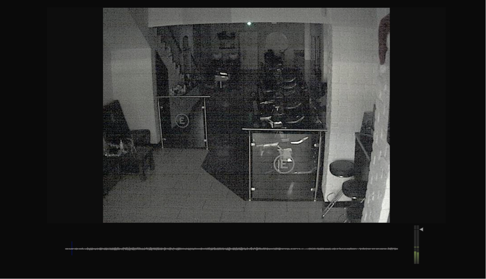
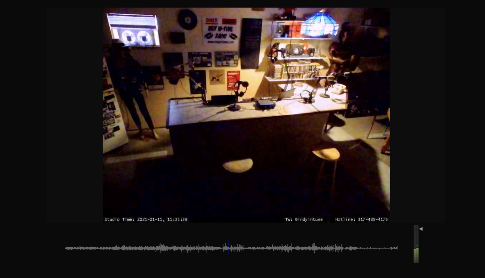

Please set a password
Art Prize: Italian National Arts Prize XV, 1. "Electronic Arts" - Sassari
In a world where surveillance technology is becoming increasingly pervasive, Please Set a Password is a thought-provoking audio-visual project that invites viewers to question their own privacy and security. The installation is designed to highlight the potential dangers of unsecured surveillance cameras, and the ways in which our private lives are increasingly being exposed to the public eye.
The installation uses an algorithm to scan the internet for IP addresses that host the software of unsecured surveillance cameras. It then collects and displays the footage from these cameras in real time.
By tapping into these cameras, Please Set a Password offers a rare glimpse into the full, uncensored view of public and private spaces that are being monitored. The visual component of the project is therefore not only captivating but also deeply unsettling, as viewers are confronted with the uncomfortable reality of constant surveillanc of unaware spaces and people.
The audio component, generated through real-time audio synthesis based on image analysis, adds another layer of depth and complexity to the installation. The soundscape that accompanies the footage offers a hauntingly eerie experience that can induce feelings of anxiety and discomfort.
Moreover, the name of the project serves as a reminder of the importance of securing one's surveillance technology and protecting one's privacy. The phrase "Please Set a Password" may seem like a simple request, but it carries a powerful message: that the responsibility for safeguarding our privacy and personal information lies in our own hands.
Through this installation, I want to spread awareness about the potential risks and consequences of unsecured surveillance cameras. By using both visual and audio elements, Please Set a Password offers an immersive and thought-provoking experience that can inspire viewers to reflect on the state of privacy in the modern world. It is a timely and important commentary on the intersection of technology, privacy, and human rights.

